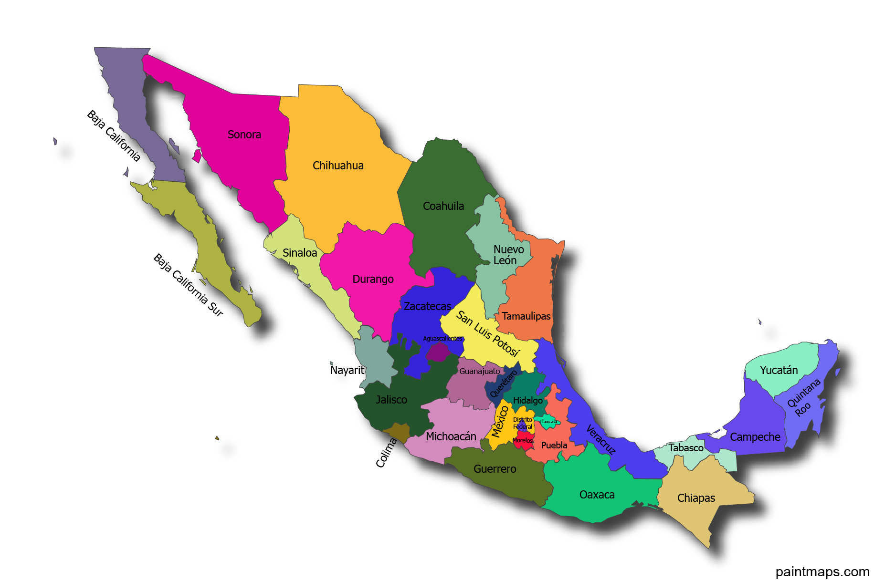

Informações Gerais
Informações adicionais gerais sobre o México.
| Dados Gerais: | |
|---|---|
| Capital do país | Cidade do México |
| Continente | América do Norte |
| Área | 1.973.000 km² |
| População | Cerca de 130 milhões |
| Idioma oficial | Espanhol |
| Fuso horário | UTC-6 |
| Densidade demográfica | 67 hab/km² |
| Moeda | Peso mexicano |
Mapa do México
